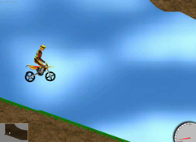
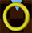
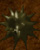
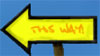

X-Moto
Dieser Artikel wurde für die folgenden Ubuntu-Versionen getestet:
Ubuntu 16.04 Xenial Xerus
Ubuntu 14.04 Trusty Tahr
Zum Verständnis dieses Artikels sind folgende Seiten hilfreich:
X-Moto  ist ein 2D-Motocross-Spiel. Es geht darum, sich und sein Motorrad unbeschadet durch die Landschaft zu steuern. Weder Hügel noch Gräben können einem guten Fahrer Widerstand leisten, allen anderen kommt leider die ungeliebte Physik dazwischen...
ist ein 2D-Motocross-Spiel. Es geht darum, sich und sein Motorrad unbeschadet durch die Landschaft zu steuern. Weder Hügel noch Gräben können einem guten Fahrer Widerstand leisten, allen anderen kommt leider die ungeliebte Physik dazwischen...
Installation¶
X-Moto kann direkt aus den offiziellen Paketquellen installiert werden [1]:
xmoto (universe)
 mit apturl
mit apturl
Paketliste zum Kopieren:
sudo apt-get install xmoto
sudo aptitude install xmoto
Konfiguration¶
Anschließend kann das Spiel mit der Eingabe von xmoto gestartet werden [2]. Über "Optionen" im Spielmenü kann es den eigenen Wünschen angepasst werden.
| Optionen | |
| Menüpunkt | Beschreibung |
| "Allgemein" | Dient zur Generellen Einstellung des Spiels. |
| "Video" | Einstellung der Grafik. |
| "Audio" | Einstellung der Audio-Qualität. |
| "Steuerung" | Einstellung der Tastenbelegung. |
| "WWW" | Auf Wunsch können beim Start neue Levels und Rekorde aus dem Internet geladen werden. Dieses lässt sich hier Aktivieren. |
| "Geist" | Einstellung über den "Geist", der nach einem beendeten Level erscheint. |
Einführung ins Spiel¶
|  |
| Spielszene |
| Steuerung | |
| Taste | Beschreibung |
| ↑ | Beschleunigt das Motorrad. |
| ↓ | Bremst es ab. |
| ← → | Neigt es nach Hinten oder nach Vorne. |
| Zum Drehen des Rades. | |
| F9 | Wechsel zwischen Grafik-und Strichmännchen-Modus. |
Neigt es sich zu weit nach vorne oder hinten, so muss man dieses korrigieren. Ansonsten berührt der Fahrer den Boden und das Level muss neu gestartet werden. Hat man nun alle Punkte gesammelt, so ist das Ziel frei.
| Symbole im Spiel | |
| Symbol | Bedeutung |
| Kennzeichnet das Ziel des Levels. | |
|  | Dies ist ein Punkt, den man einsammeln muss. |
|  | Das ist eine Mine. Berührt man sie, ist das Level verloren. |
|  | Zeigt die Richtung an, in die man fahren soll. |
Problembehebung¶
Wenn man das Spiel mit einer Auflösung startet, die größer ist als die Bildschirmauflösung, kann es zu Fehlern kommen. Das Spiel startet nicht mehr, und wenn es über das Terminal aufgerufen wird, bekommt man eine unschlüssige Fehlermeldung. Um den Fehler zu beheben, startet man X-Moto im Terminal [3] mit folgendem Befehl:
xmoto -res 1024x768
Das Spiel wird nun in der Auflösung 1024x768 Pixel gestartet und man kann nun unter Optionen eine kleinere Auflösung auswählen. Das Spiel sollte nun wieder "normal" zu starten sein. Natürlich muss man evtl. mit der Auflösung 800x600 Pixeln starten, je nach Auflösung.
Alternativ lässt sich natürlich auch die Konfigurationsdatei oder die Bildschirmauflösung des XServers ändern.
- Erstellt mit Inyoka
-
 2004 – 2017 ubuntuusers.de • Einige Rechte vorbehalten
2004 – 2017 ubuntuusers.de • Einige Rechte vorbehalten
Lizenz • Kontakt • Datenschutz • Impressum • Serverstatus -
Serverhousing gespendet von